This guide references cards from Captain’s Chair, To Boldly Go, and Second Contact for various examples. The relevant text for all cards is included, but you can review images of every card: here in the Compendium
Thanks to Periodic Agent for creating the Compendium and assisting with editing this guide. Thanks to other members of the Captain’s Chair Fans Discord for their assistance with this guide and for asking questions which formed many of the examples included. Thanks, of course, to the developers and playtesters whose answers to those questions formed parts of this guide.
WHEN IS A REACTION AVAILABLE?
Reactions are a table operation, which is indicated by the fact that they are in a blue box on the card. Table operations can only be activated on cards that are in play but not in the Staging Area or beamed. Reactions are most often found on promoted Duty Officers, deployed cards (usually Ships or cards with the ONGOING trait), controlled Locations, Status cards, and Captain cards.
Beamed cards are tucked under the card to which they are beamed, covering the table operations along with everything else but the trait(s) and suit. Since the table operations on the beamed card are covered, it is clear that they are not available (out of sight, out of mind). You also cannot activate a table operation, like Reactions, from a card in your Staging Area. The biggest trap here is usually Person cards. In order to use a table operation of a Person card, it must be promoted to Duty Officer (unless a specific operation allows use of table operations from cards in the Staging Area). If a Person card is played for its Play operation, usually the table operations are not available.
Other cards with Reaction operations, like some Ships and Cargo cards, will deploy as part of their Play operation. This means the card is moved from the Staging Area to the Fleet Area. Once the card is in the Fleet Area, the table operations, including Reactions, are available.
Using a Reaction operation exhausts the card and Reactions cannot be used on cards that are already exhausted.
Reactions can be used on your turn or your opponent's turn and using the activation exhausts the card. It Refreshes/un-exhausts during your next Clean-Up step (unless another operation Refreshes the card sooner). This means that using a reaction during your opponent's turn would leave the card already exhausted at the start of your next turn.
↑ back to topDO I HAVE TO USE A REACTION?
Reactions are optional. If you do not wish to activate a Reaction, you can choose not to. If you do activate the Reaction you must resolve the entirety of the operation following the usual rule for resolving operations (i.e. everything is mandatory unless indicated otherwise, if there is a cost it must be paid to gain the benefit, etc.).
↑ back to topWHEN CAN I USE A REACTION?
If you choose to use a Reaction, you must do so as soon as the triggering event occurs. If you do anything besides activating Reactions (and performing whatever actions are included within those Reactions) the window has closed. This could include playing another card, activating an operation, or even moving on to complete the remainder of the Play operation on the card that triggered the Reaction.
Reactions can trigger off many different events and each trigger will explain the condition to activate it. Reactions that trigger after a certain trait has been “Put into Play” can activate when any card containing that trait has been put into play.
Please see the explanation/examples below to better understand when this window opens and closes.
↑ back to topWHAT IF I HAVE MULTIPLE REACTIONS?
If you have multiple available Reactions that trigger on the same condition, you may resolve any number of them in the order of your choosing. Activating one Reaction, and doing all of the actions associated with that Reaction, does not prevent you from activating a second Reaction that was triggered by the initial event. This is explained in more detail below but here is a basic and not so basic example to help understand:
Example 1:
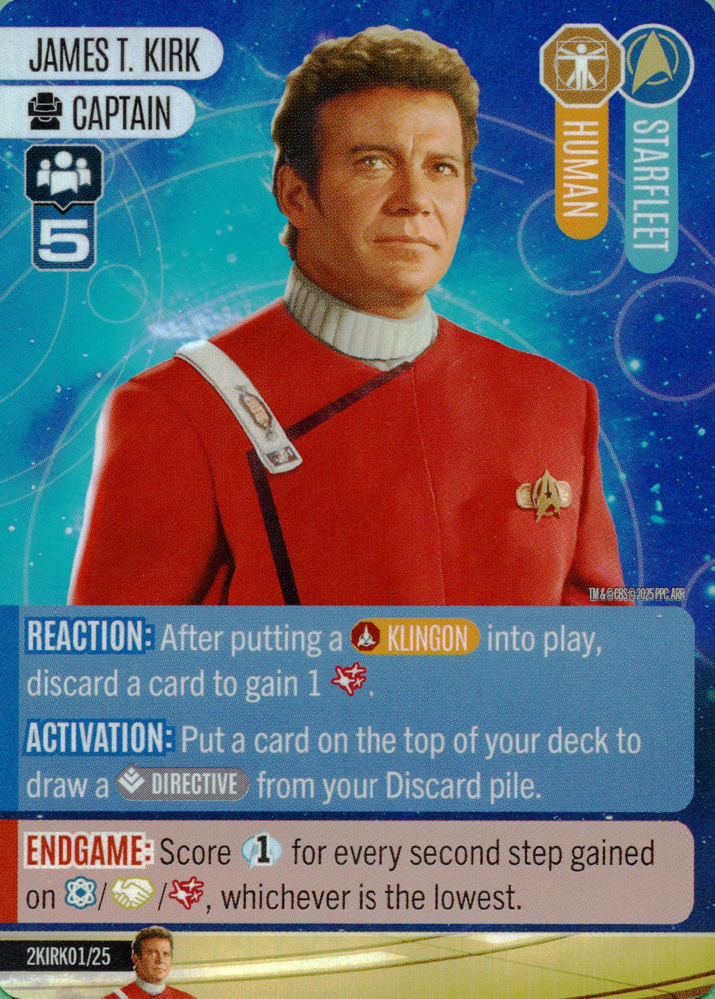
You are playing as Captain Kirk whose Captain card has
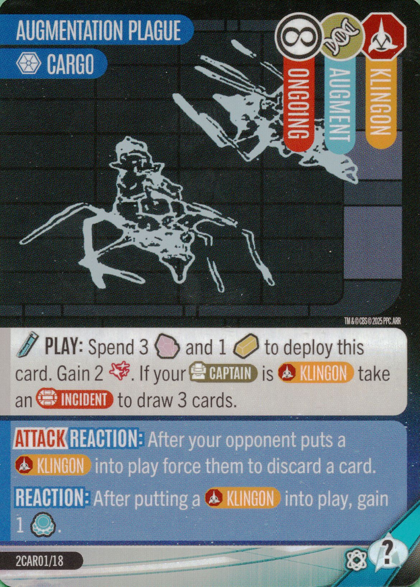
You also have the Augmentation Plague (Cargo) deployed, which has
You play and deploy the Vor’cha Attack Cruiser (Ship) which has the KLINGON trait. Which triggers the Reaction of both cards. You can activate them in either order but for this example we’ll just say you choose to activate Kirk and then the Augmentation Plague..
The definition of when a card is “Put into play” is detailed below but for now suffice it to say that by deploying this Ship with the KLINGON trait, you have put a KLINGON into play.
- You play the Vor’cha Attack Cruiser (Ship with KLINGON)
- REACTION (Kirk)- Discard a card to gain 1 Military
- REACTION (Augmentation Plague)- Gain 1 Glory
Note that activating the Reaction on Kirk, discarding a card, and gaining 1 Military do not prevent you from going back to then also activate the Reaction of the Augmentation Plague. The Reaction window stays open while you complete other Reactions that triggered on the same event.
THE RULEBOOK SAYS REACTIONS CAN INTERRUPT ANOTHER OPERATION, DOES THAT MEAN AS SOON AS A CARD LEAVES MY HAND I SHOULD ACTIVATE THE REACTION IMMEDIATELY?
Not entirely. The next portion explains in more detail when the window for a Reaction opens which is the most complicated part; but, let’s use a slight variation on the above example just to see how a Reaction could interrupt another operation (including another Reaction).
Example 2:
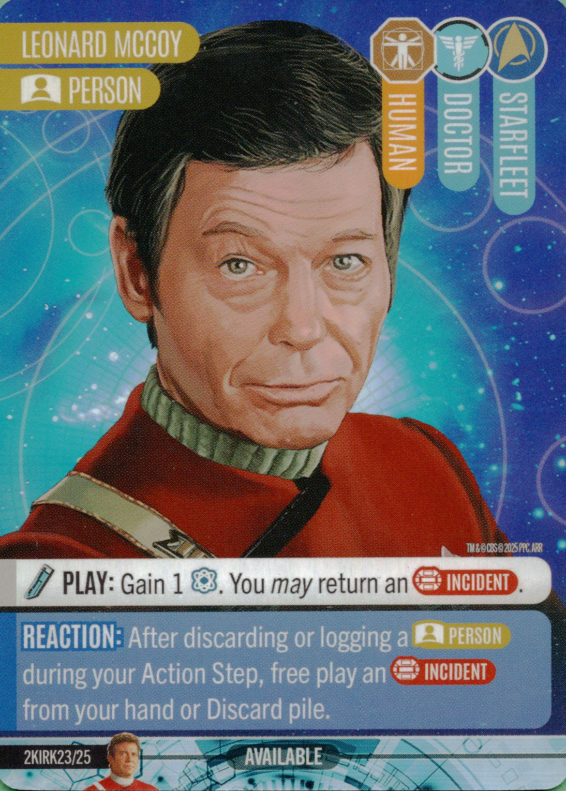
Same as Example 1 above but you also have Leonard McCoy (Person) as your Duty Officer which has
Presume you have a Person in hand and an Incident in your discard pile.
Now the sequence could be:
- You play the Vor’cha Attack Cruiser (Ship with KLINGON)
- REACTION (Kirk)- Discard the Person from hand to Discard pile.
- REACTION (McCoy)- free play and resolve an Incident.
- REACTION (Kirk) (continued) gain 1 Military.
- REACTION (Augmentation Plague) Gain 1 Glory.
Note how a window for McCoy’s Reaction opened up within Kirk’s Reaction operation. As soon as you completed the triggering action of “discarding a person” the window for McCoy opened. That window would close as soon as you move onto the next game action which in this case was gaining 1 military. Therefore, McCoy’s Reaction can interrupt Kirk’s Reaction and it must interrupt it, if you choose to use it.
See Example 16 below for a more complicated example of multiple reactions.
↑ back to topWHEN EXACTLY DOES A REACTION WINDOW OPEN/WHEN CAN THE REACTION BE ACTIVATED?
If you choose to activate a Reaction you must do it as soon as the triggering event occurs. If you do not activate the Reaction at that opportunity, you must wait for a different triggering event.
So when is this timing window? It depends on the exact language of the Reaction and the exact language of the triggering event.
Most Reactions occur "After" a specific event occurs. Some occur "When" an event occurs. Reactions that occur "After" will trigger once the event that triggered it has finished; Reactions that occur "When" will trigger before or instead of the event that is triggering it.
↑ back to topEXPLAIN REACTIONS USING WHEN!
Reactions that say "When X happens/would happen…" immediately interrupt the attempted operation and the Reaction occurs before or instead of the event that triggered it resolves. Some examples of card text and the order of events surrounding their use will help explain this:
Example 3:
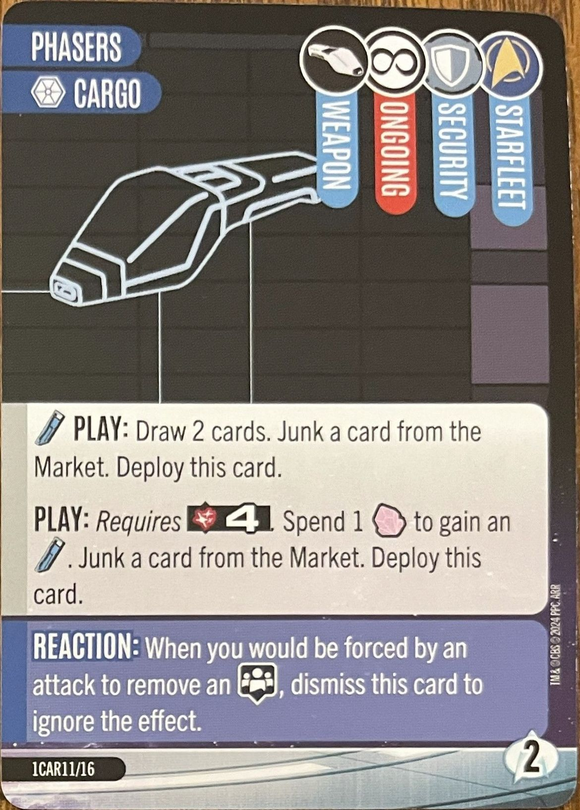
During your turn you played and deployed Phasers (Cargo)-
Now it is your opponent’s turn.
- The opponent plays Type III Disruptor Pistols which costs an action and states
"PLAY: Gain 1 Military. Junk a card from the Market. You may discard a KLINGON/ROMULAN/BREEN to remove up to 2 opponent Away Teams from the same Location. Gain 1 Glory for each Away Team removed.
The opponent spends an action and puts Type III Disruptor Pistols into the Staging Area. They gain 1 Military, junk a card from the Market, and discard a ROMULAN card from their hand.
- At this point, the next step of the Play operation would require you to remove up to 2 Away Teams.
- You interrupt the Play operation of the Type III Disruptor Pistols by activating Phaser's Reaction operation. You pay the cost of dismissing Phasers (i.e. moving it from the Fleet Area to Discard) and the negative effect of the attack is ignored. You do not remove any Away Teams
- Your opponent continues with the rest of the operation, in this case gaining a glory for each Away Team removed, which would be 0. But, if the operation causing the Attack card had other effects, such as deploying the card, gaining other resources, etc. they could still occur.
Example 4:
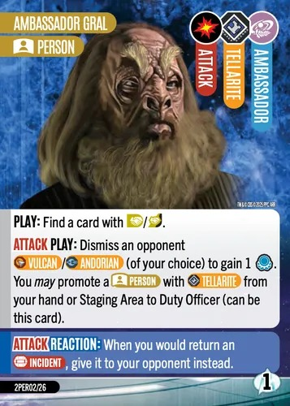
You have Ambassador Gral (Person) as your Duty Officer with,
- You play the Incident- Energy Drain which costs an action and states,
"PLAY: Spend 2 Dilithium to return this card. If you have an ENGINEER in play, gain an Action."
- You spend the action and spend 2 Dilithium.
- You activate the REACTION of Ambassador Gral.
- Instead of returning the Incident to the Incident deck, you give it to your opponent (the equivalent of you giving a card is for your opponent to "take" it, so it goes directly to their hand).
- You complete the rest of the Play operation of Energy Drain to check if you have an Engineer in play to gain an Action.
Note that in these cases, the "When" Reaction interrupts the operation that triggered it and occurs before/replaces the usual effect. It does not matter if the event triggering the Reaction is from a played card, an activated operation, a Location's CONTROL operation, or any other source.
↑ back to topEXPLAIN REACTIONS USING AFTER!
Reactions that say "After X happens…" occur, as you might guess, after the triggering event. However, “After” can be surprisingly tricky depending on what exactly the event is that is causing the trigger.
If a Reaction triggers "After putting X into play" then the method of entering play determines when this has occurred.
- When you play a card using one of its Play operations, it has been "put into play" after the Play operation has resolved. (See Examples 5-7)
- When you take control of a Neutral location, it has been "put into play" before the Control operation is resolved. (See Example 8)
- When you beam a card from your hand or discard or promote a card from hand or discard to Duty Officer it has been “put into play” immediately. (See Examples 9-11)
NOTE: Cards beamed/promoted from a different location (direct from deck, from the Staging Area, etc.) are not being put into play via beaming/promoting. - When a card explicitly instructs you to “put [a card] into your Staging Area” the card being put into the Staging Area has been “put into play” immediately. (See Example 12)
If a Reaction triggers “After” an event or action such as sending an away team, warping a ship, etc., it can trigger immediately upon completion of the event/action. (See Examples 13-14)
↑ back to topIS THERE A DIFFERENCE BETWEEN BEING "IN PLAY" AND "PUTTING INTO PLAY"?
Yes, there is an important difference. Everything discussed above relates to X being "Put into play" or "Putting X into play." Putting X into play encompasses the whole process of the card entering the staging area, resolving the Play operation, deploying it, etc. But the card is "in play" as soon as it enters the staging area or any other part of the play area (beamed, promoted, etc.).
This is important because if a card's Play operation checks for a certain number of traits "in play" it will count itself. Thus, the card is "in play" even though you have not yet finished "putting it into play".
↑ back to topREACTING TO “PUT INTO PLAY” VIA A PLAY OPERATION:
For cards entering via a Play operation, the card has been put into play after the Play operation is complete.
When you play a card via a Play operation consider this simplified sequence:
- Lay the card in the staging area.
- The Card is now "in play".
- Resolve the Play operation.
1,2, and 3 together is the process of it “being put into play"
- Trigger "after putting X into play" Reactions
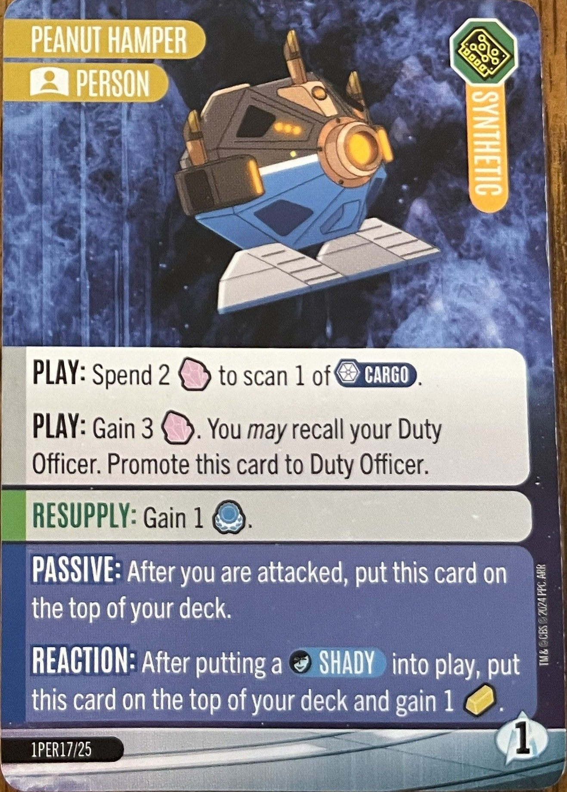
Here are some examples of that in practice, by having Peanut Hamper (Person) as our Duty Officer which has,
Example 5:
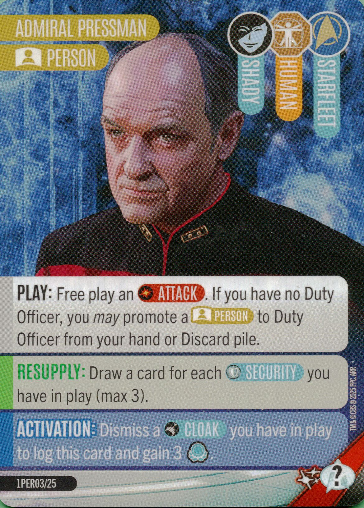
You play Admiral Pressman (Person with the SHADY trait) from your hand for his Play operation which states,
For this example, let's presume you have no Attack card in hand.
- You play Admiral Pressman to your Staging Area.
- The first sentence says, "Free play an ATTACK."
It does not say may so this is mandatory, but it is also not listed as a cost (which would be in the format Do/Spend X to Y) which means if you have an Attack you must play it but if you do not have one, you can still play Admiral Pressman and just get no benefit for this sentence.
- The next sentence says, "If you have no Duty Officer…"
At this point you do still have Peanut Hamper on duty. Since you have not completed the Play operation of Admiral Pressman, you have not yet put a SHADY into play, therefore you cannot activate Peanut Hamper's Reaction which would move her to the top of the deck.
- Now that Admiral Pressman's Play operation is complete, you have put a SHADY into play.
If you want to react with Peanut Hamper (or any other Reaction that triggers from Admiral Pressman being put into play) you can do so at this point. If you do not do so now, you must wait until after putting a different SHADY into play.
Example 6:
Same as Example 5 except in addition to Admiral Pressman, you have Captain Dorg (Person with SHADY, ATTACK, and KLINGON) in hand. His Play operation is irrelevant for this example (except to note that even though his Play operation is not an Attack operation, the card has the ATTACK trait which is all that is required for Admiral Pressman)
- You play Admiral Pressman to your Staging Area.
- You free play an Attack- Captain Dorg.
- Complete the Play operation of Captain Dorg.
- Now, before proceeding to the next sentence of Admiral Pressman's operation, you can interrupt it and activate Peanut Hamper's REACTION operation.
This is because you have completed "putting a SHADY into play" by completing the Play operation of Captain Dorg. In this way Reactions that trigger "After X" can interrupt a Play operation, but only when that event X has itself completely resolved.
- So you react with Peanut Hamper. Moving her to the top of your deck and gaining 1 Latinum.
- Continue with Admiral Pressman's Play operation. The next sentence is "If you have no Duty Officer…"
Now, you do not have a duty officer so you can take advantage of Admiral Pressman's operation to promote a Person from hand or the discard pile.
Example 7:
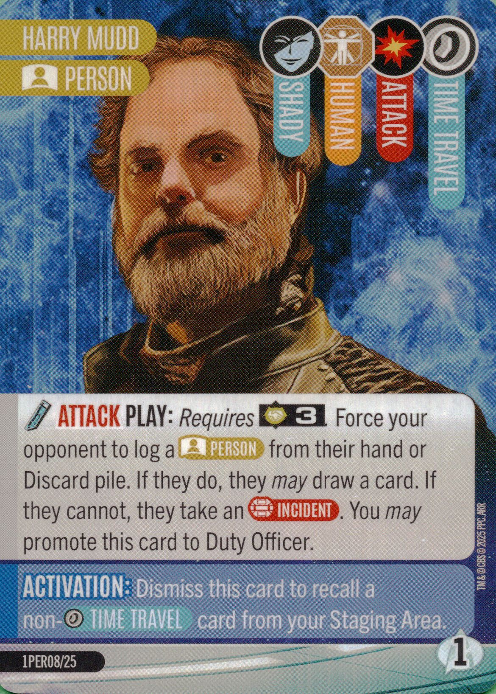
You have Peanut Hamper as Duty Officer and choose to play Harry Mudd (Person with SHADY). The relevant portion of Harry Mudd's Play operation is the last sentence,
For this example, presume you do not have any operation in play that would allow you to have a second duty officer.
- You play Harry Mudd, spending an action and placing the card in your Staging Area.
- You complete the first three sentences of his Play operation.
Finally, you choose to use the last sentence of his Play operation to promote him to Duty Officer.
- As part of the promotion process you see that you have too many duty officers, so you choose to dismiss Peanut Hamper. Leaving Harry Mudd as your sole Duty Officer.
- You never had an opportunity to react with Peanut Hamper because by the time Harry Mudd's Play operation was complete (which was also the time "After you put a SHADY into play") Peanut Hamper was no longer the Duty Officer so the Reaction operation was no longer available.
NOTE ABOUT LOCATIONS: Locations that start in your deck have a Play operation, "Play: Take control of this Location." Then, they may have a separate Control operation. These are two distinct operations. These Locations are put into play after the Play operation resolves and before the Control operation resolves. So they follow the same rules for cards entering via Play operations and the rules for neutral locations, which are also put into play before their Control operation, if any, resolves, as discussed in the next section.
↑ back to topWHEN IS A CONTROLLED NEUTRAL LOCATION “PUT INTO PLAY”:
Secured neutral locations that you are taking control of are put into play before their Control operation.
Let's see an example continuing to use Peanut Hamper (Person) as our Duty Officer ("REACTION: After putting a SHADY into play, put this card on the top of your deck and gain 1 Latinum.”)
Example 8:
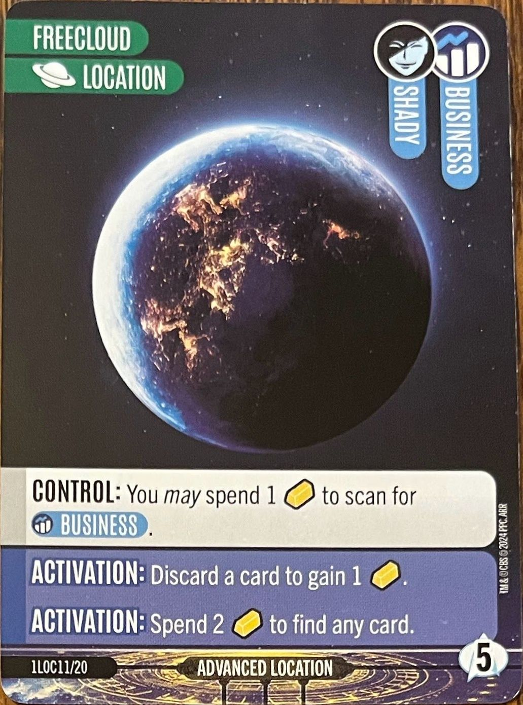
During your Control step, you take control of Freecloud (Location with SHADY) which has a Control operation,
- You move Freecloud from the Neutral Zone into your Location Area. You have now put a SHADY into play.
- Before you perform the Control operation, you choose whether you want to use Peanut Hamper's Reaction.
- For this example, you want the Latinum from Peanut Hamper so you choose to activate the Reaction, placing Peanut Hamper on top of your deck and gaining 1 Latinum.
- Now you resolve the Control operation of Freecloud, spending the Latinum you just gained.
WHAT ABOUT CARDS BEING “PUT INTO PLAY” VIA BEAMING/PROMOTING
A card is put into play immediately if it is beamed from hand or Discard or if it is promoted to Duty Officer from hand or Discard. Going forward any reference to a card being put into play via beaming/promoting will refer only to cards that were beamed/promoted from hand or discard. Cards beamed/promoted from a different location (direct from deck, from the Staging Area, etc.) are not being put into play.
NOTE: The reason cards that are beamed/promoted from locations other than hand or Discard are not being put into play is to resolve situations such as Lursa (Person) or Sarek (Person). Lursa has a Play operation which includes the option of beaming her to a ship. So you play her to your Staging Area, begin resolving her Play operation, and then partway through beam her from the Staging Area to a ship. Since she is not being beamed from hand or Discard, this does not put her into play. She will be put into play at the end of her Play operation like any other card being played for its Play operation. Similarly, Sarek’s Play operation promotes himself and optionally another Person in your Staging Area to Duty Officer, these cards are not put into play twice, they are put into play at the conclusion of their Play operations.
NOTE: Operations that “Find and beam/promote” a card first bring the card to your hand (via Find) and then beam/promote them from your hand.
Once a card is beamed/promoted, it has been put into play and Reactions that trigger “After putting X into play” can be activated. Potentially even Reactions on itself, if it is being promoted.
If a card is beamed/promoted through another card's Play operation, the Reaction can interrupt the Play operation. This is because even though the card with the Play operation has not finished being put into play, the card being beamed/promoted has.
Example 9:
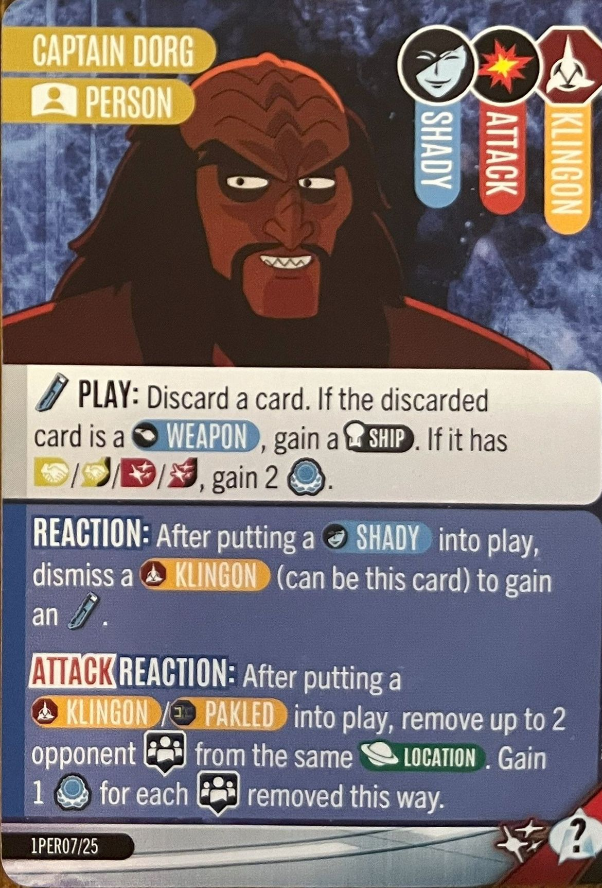
You have Captain Dorg (Person with SHADY, ATTACK and KLINGON) in hand. He has two Reactions.
Note- The only difference between operations and Attack operations is that Attack operations tend to affect your opponent and count as them being attacked for purposes of certain triggers.
Captain Dorg has traits that match both Reactions. Once you Promote him, you can immediately react with him. He can be a KLINGON Reacting to a KLINGON being put into play.
Many of the examples above used reactions after a certain trait has been put into play, but the analysis is the same if the Reaction triggers on a certain type of card being put into play.
Example 10:
You are playing Captain Pike.
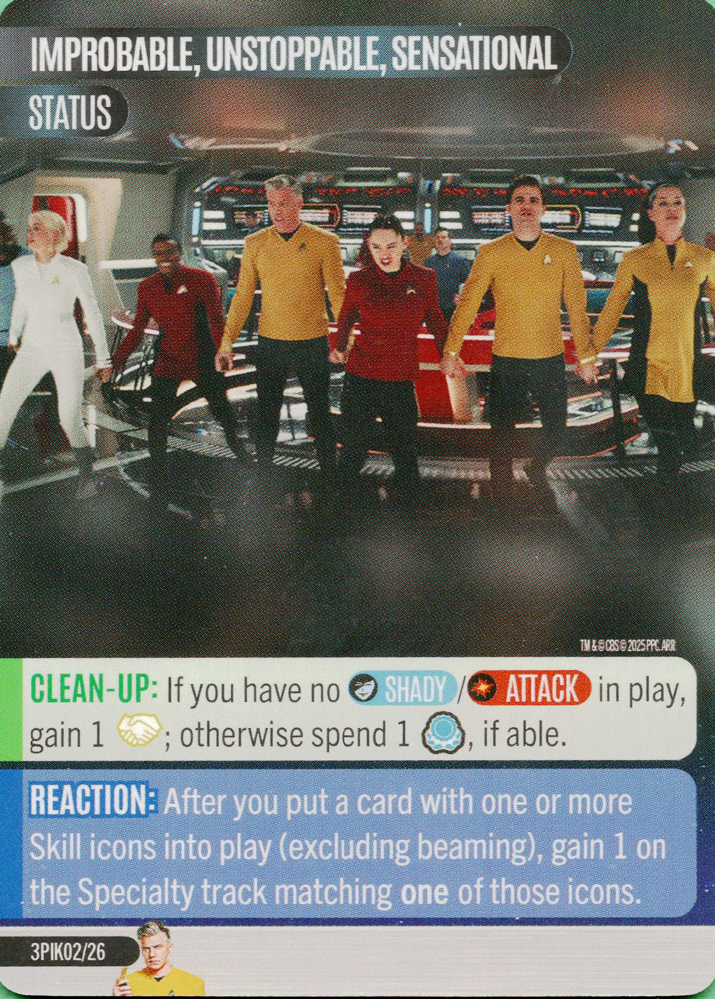
You have the Status card Improbable, Unstoppable, Sensational which says,
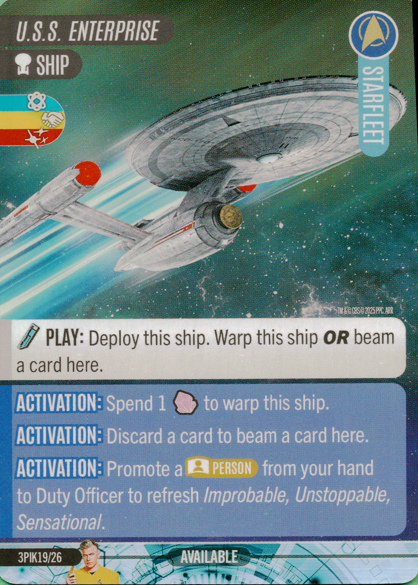
You have the U.S.S. Enterprise which has the Activation,
You have Lt. Spock in hand who has a Research skill icon.
For this example, presume that no cards are currently exhausted.
The sequence of play here could be:
- Use the U.S.S. Enterprise to Promote Lt. Spock from hand to Duty Officer.
- You have now put a card with a Research skill icon into play so you can interrupt the Enterprise's Activation operation.
- React with Improbable, Unstoppable, Sensational to gain 1 step on the Research track. Exhaust Improbable, Unstoppable, Sensational.
- You return to the Activation operation which says to refresh Improbable, Unstoppable, Sensational.
- Refresh that card so it is ready to be triggered again if you play another card with a skill icon this turn.
This is permissible because as soon as Lt. Spock was promoted, the condition for the Reaction (putting a card with a skill icon into play) was complete. There was no need (and in fact it would not be permitted) to wait for the rest of the Enterprise's Activation operation to complete.
As discussed above, this is very different from a card being put into play via a Play operation, where you need to wait for the Play operation to complete before you can react with "After putting X into play".
Let's take the example above, but change it so instead of using a promotion Activation, you have a hypothetical card that has a skill icon and a Play operation that says "Refresh Improbable, Unstoppable, Sensational." The sequence would look like this:
- You start the turn and Improbable, Unstoppable, Sensational is not exhausted.
- You play this hypothetical card for its Play operation.
- As part of the Play operation you can refresh Improbable, Unstoppable, Sensational but this is wasted.
- Now that the Play operation is complete, the card is in play and you can activate Improbable, Unstoppable, Sensational, exhausting it.
The key difference is that before we were able to refresh the card immediately for a potential second use this turn, now we cannot because the operation causing the card to refresh came before we were able to use the Reaction.
ANY EXAMPLES OF A PLAY OPERATION ALSO CAUSING A CARD TO BE PROMOTED?
Example 11:
You are playing as Captain Soval.
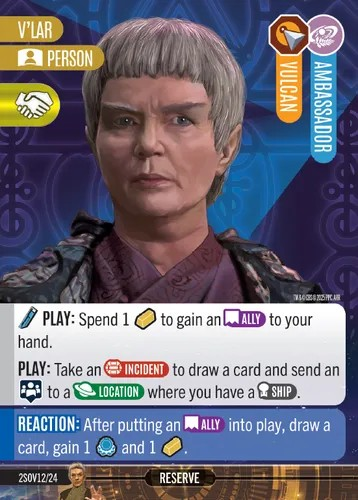
You have V’Lar (Person) in your hand who has,
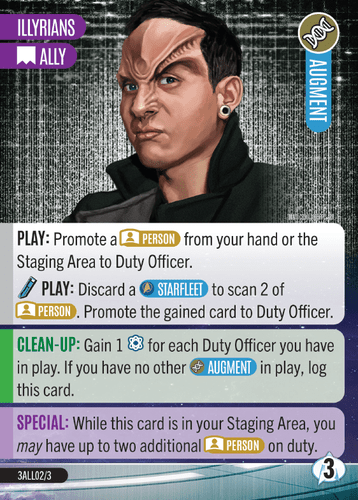
You also have in hand the Illyrians (Ally) who have,
- You play the Illyrians.
- Using their Play operation, you promote V’Lar to Duty Officer.
V’Lar has now been put into Play. Any Reactions to her being put into play would trigger now.
- Now that the Play operation of the Illyrians is complete an Ally has been put into play.
- React with V’Lar to an Ally being put into play.
Here, V’Lar is promoted within the Play operation and therefore is in Play when the Play operation resolved, which is when the Illyrians were put into play. Thus, she can react after the Ally was put into play. Even though the promotion was the entirety of the Play operation, it happens before the Play operation is completed.
ANY OTHER SHORTCUT WAYS TO THINK ABOUT WHEN REACTION WINDOWS OPEN AND CLOSE WITHIN OTHER OPERATIONS?
You could think of this as a series of parentheses around blocks of things, which could nest within each other.
If you want to react to effect 1, you must do so after effect 1 resolves but before effect 2. If you want to react to the card with this Play operation being put into play, you do so after effect 2 is resolved.
In the above Example 11 there was only 1 effect but you can still consider it:
ANY EXAMPLES OF A CARD BEING PUT INTO THE STAGING AREA BY ANOTHER CARD?
Some cards have an operation that explicitly instructs you to put another card into your Staging Area. That card entering the Staging Area has been “put into play” as soon as it enters the Staging Area (even though none of its Play operations are being resolved).
Example 12:
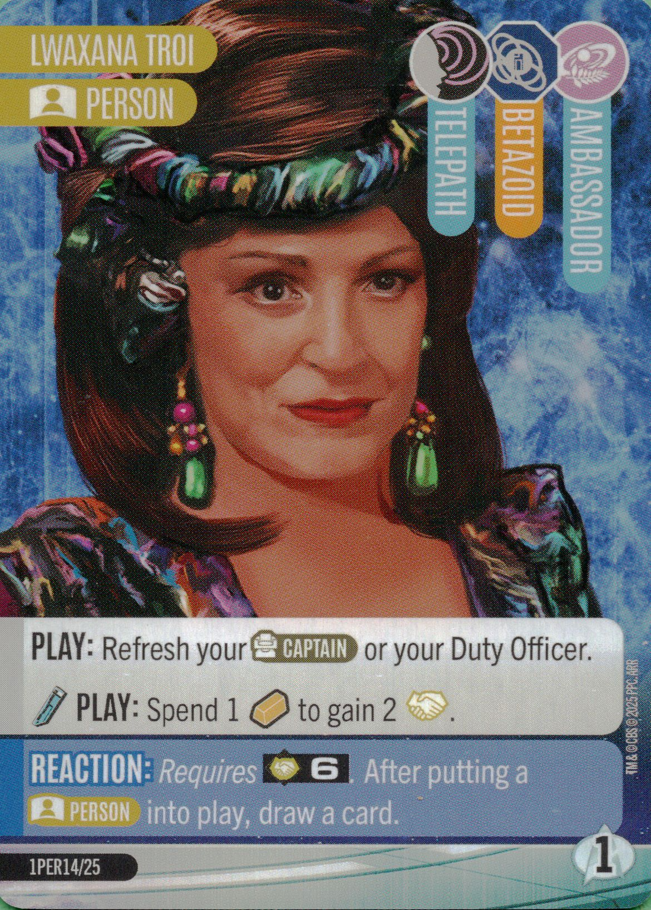
You have Lwaxana Troi (Person) as Duty Officer who has
Presume you have the necessary Influence requirement to trigger this reaction.
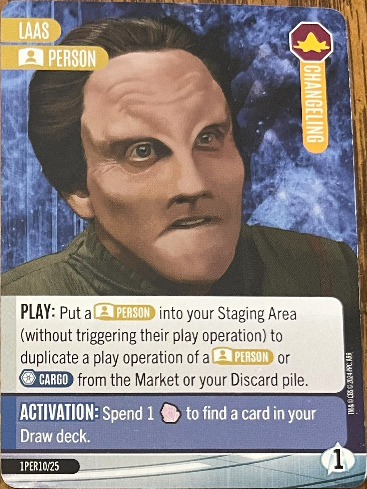
In hand you have Laas (Person) who has
In your hand you also have Peanut Hamper (Person); her Operations are not relevant for this example.
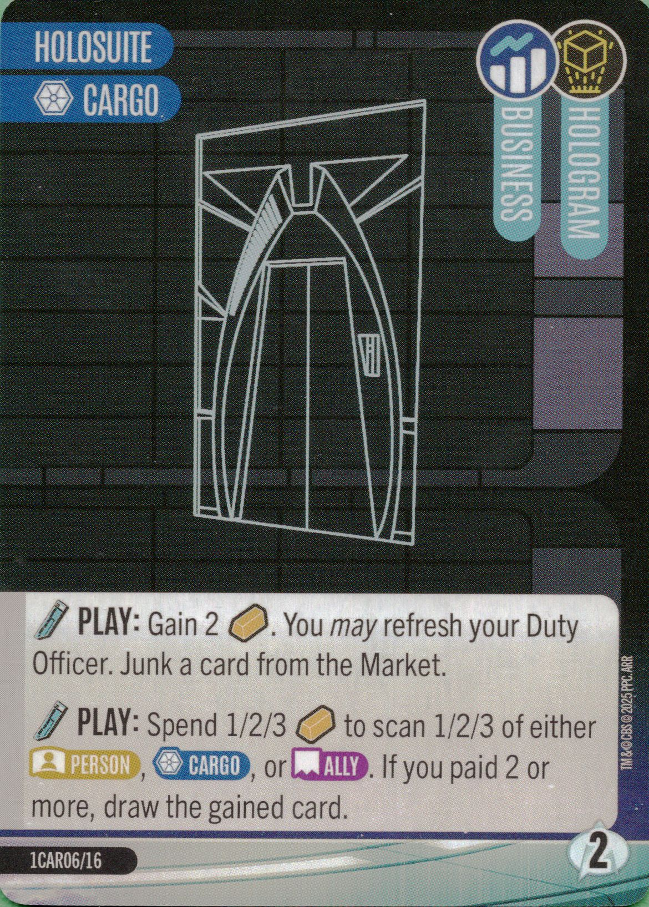
In the Market there is Holosuite (Cargo) that has
- You play Laas, moving him to the Staging Area.
- As part of Laas’ Play operation you put Peanut Hamper into the Staging Area without triggering any play operation.
- Peanut Hamper is a Person that has been put into play so you react with Lwaxana Troi and draw a card, exhausting Lwaxana Troi.
- You continue the Play operation of Laas and duplicate the Holosuite from the Market. You gain 2 Latinum and you choose to refresh Lwaxana Troi. You junk a card in the market (which could be Holosuite).
- Laas’ Play operation is now complete so he has been put into play. You react with the refreshed Lwaxana Troi to draw a card.
REACTING TO OTHER EVENTS (SENDING AN AWAY TEAM, WARPING A SHIP, TAKING AN INCIDENT, ETC.)
Similar to beaming/promoting, a Reaction can be triggered by these events as soon as they occur. If they occur as a result of a Play operation, a Reaction can interrupt the Play operation because the relevant event has completed, even if the Play operation has not.
Example 13:
You are playing as Captain Burnham.
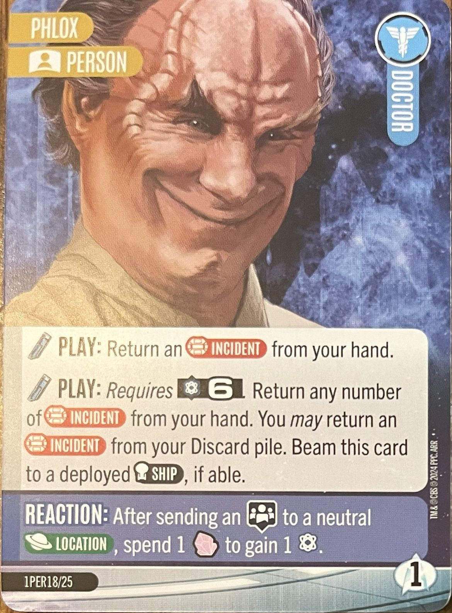
You have Phlox (Person) as your Duty Officer who has,
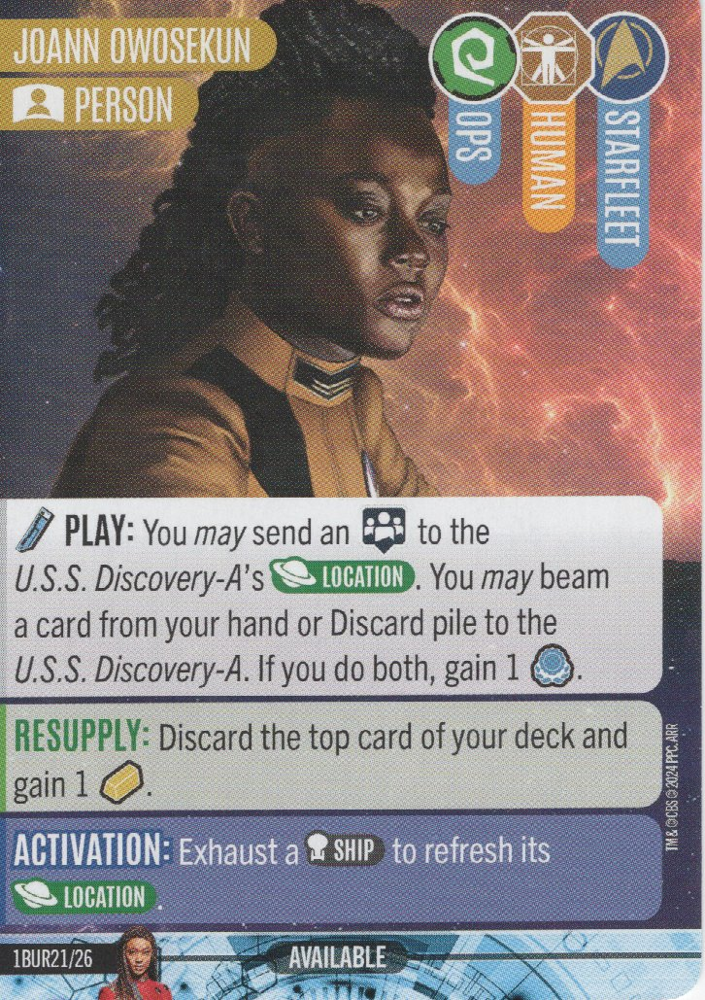
You also have Joann Owosekun (Person) in hand with,
For purposes of this example presume that U.S.S. Discovery-A is at a neutral Location, that "Inert Dilithium" is logged so you may use glory as dilithium, and that you are completely out of both glory and dilithium.
You may intend to use Joann Owosekun's Play operation to send the away team, beam a card, gain the glory, and then use that glory as Dilithium for Phlox's Reaction. But you cannot do it. This is because the opportunity to react with Phlox is when the away team is sent, not at the end of the Play operation. So the sequence is as follows:
- Play Joann Owosekun, moving her into the staging area.
- Choose to send an Away Team to the U.S.S. Discovery-A's location
- Decide if you want to react with Phlox because you have just "sent an Away Team to a neutral location" If you do not react at this point, you lose the opportunity until another operation sends another Away Team.
- Continue the Play operation by choosing to beam a card to the U.S.S. Discovery-A.
- Gain a Glory.
A similar sequence occurs if a Reaction triggers when you take an Incident as part of a Play operation. Once you have taken the incident you are in the window of "After taking an Incident…" and that interrupts the Play operation to allow the Reaction to trigger, if you choose. Then, the rest of the Play operation commences.
Example 14:
You are playing as Captain Picard
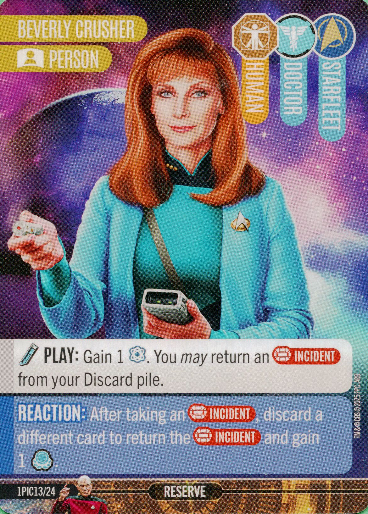
Beverly Crusher is your Duty Officer with
Presume that you have entered the Draw part of the Clean-Up step. You have no cards in hand, the draw deck is empty, and you are out of Reserves.
- You choose to enlist the Tamarians.
- You pay the cost of 2 Dilithium and take an incident.
- Before you draw any cards, including the Tamarians you just enlisted, you must now choose whether to react with Beverly Crusher.
- Since you have no other cards in hand, you cannot pay the cost of discarding a different card. Therefore, you must choose not to react with Beverly Crusher.
- Continue drawing your hand.
(Note also that the incident you took from the cost of the Development counts towards your hand size).
DOES IT MATTER IF THE CARD THAT TRIGGERED THE REACTION MOVED AFTER IT INITIALLY ENTERED PLAY?
Reactions do not care where the card that triggered the Reaction ends up except that cards in the Log cannot be interacted with unless an operation specifies otherwise.
Example 15:
You once again have Peanut Hamper as your duty officer, “REACTION: After putting a SHADY into play…”
Letheans (Ally with SHADY) have a Play operation that ends with "log this card".
After you play the Letheans , complete the Play operation, and log the card you can THEN react with Peanut Hamper because you did put the SHADY into play, even though that card is no longer in play but rather in the Log.
You are not interacting with the Letheans, just Reacting to the fact that they were put into play, so this does not implicate the rule about targeting the Log. (see Example 16 below for an attempt to target the Log)
WHAT IF I HAVE MULTIPLE REACTIONS THAT ALL TRIGGER OFF THE SAME EVENT AND IT MOVES RELEVANT CARDS TO DIFFERENT LOCATIONS?
As noted above, when you have multiple Reactions you may resolve any number of them in the order of your choosing. Reactions can sometimes move cards to different positions (beaming them, free playing them, logging them, etc.). This can get very complicated.
Example 16:
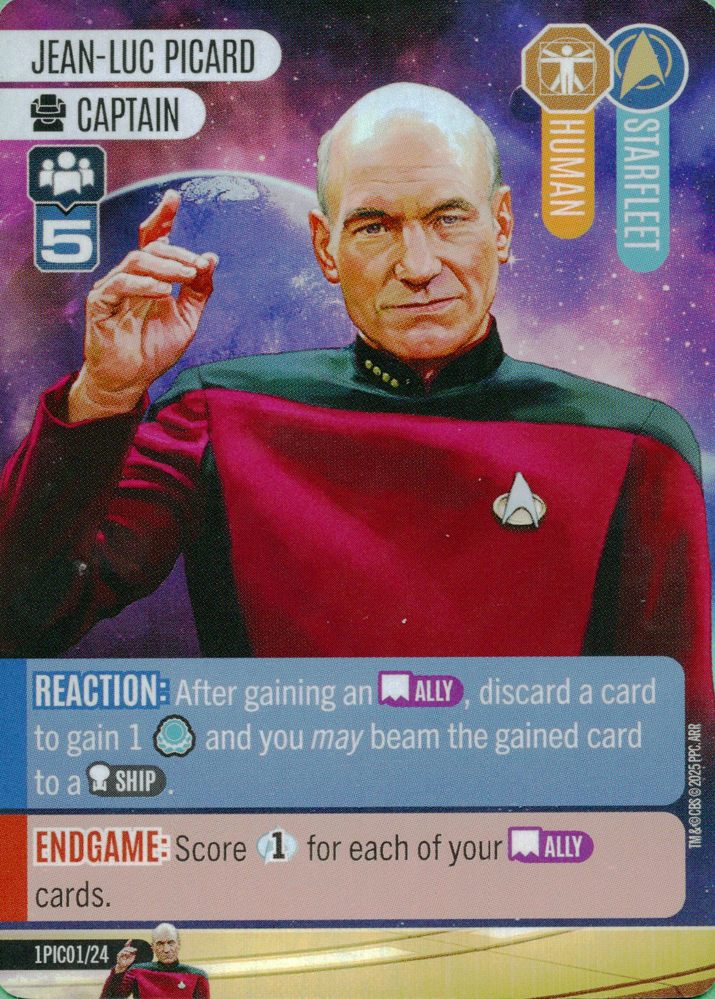
You are playing as Captain Picard with,
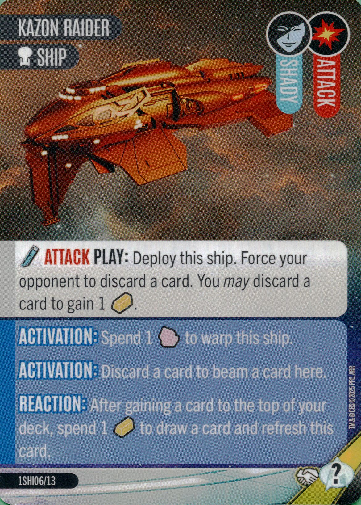
You have the Kazon Raider (Ship) in play with
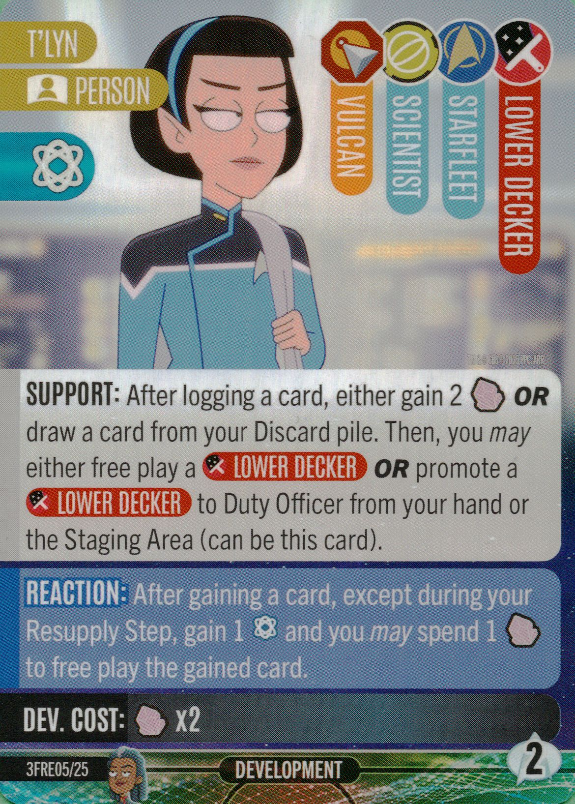
You also have T’Lyn as your duty officer somehow (she is part of Freeman’s deck but we’re just looking at a complicated hypothetical). She has,
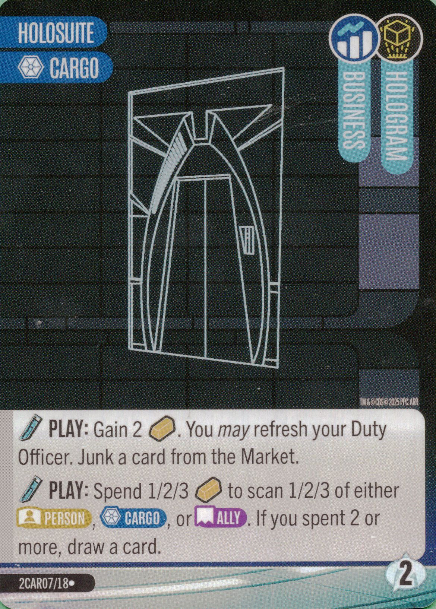
Finally, you have Holosuite (cargo),
- You play Holosuite, paying 2 Latinum, to scan the Ally Deck.
- You gain the Bolians (Ally) who have,
“PLAY: Gain 1 Influence. Draw a card. You may free play the drawn card.”
You put them on top of your deck.
- Before the Holosuite card draw, you react with “After gaining…” effects, and you choose the order.
You have Kazon, Picard, and T’Lyn who all have relevant Reactions. If you use them in that order:
- Kazon Raider draws the Bolians
- Picard allows you to discard a card to beam the Bolians to a Ship.
Note- This is a very unique interaction. Since Picard’s Reaction specifies that the gained Ally (here the Bolians) is the card that will be beamed, and there is no restriction that the discarded card be different, you could discard the Bolians to beam the Bolians.
- T’Lyn allows you to free play the Bolians (moving them from the beamed location to the Staging Area)
- You play Bolians, drawing and potentially free playing the next card in your deck.
- Complete Holosuite’s Play operation by drawing the next card.
Let’s switch the prior example up a bit by changing the order of our Reactions to- T’Lyn, Kazon, Picard.
Steps 1,2, and 3 are identical:
- T’Lyn allows you to free play the Bolians straight from the deck.
- You play the Bolians, drawing and potentially free playing the next card in your deck.
- Kazon Raider allows you to draw the next card in your deck
- Picard allows you to discard a card (could be one of the two you just drew) to beam the Bolians from the Staging Area to a ship
- Complete Holosuite’s Play operation by drawing the next card
So the order that you choose to activate Reactions can significantly change the results.
WHAT WAS THAT ABOUT NOT BEING ABLE TO INTERACT WITH CARDS IN THE LOG?
Example 17.
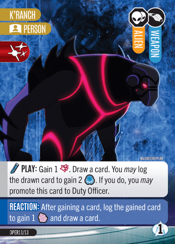
To illustrate the above rule about cards in the log cannot be targeted, we will take Example 16 and add K’Ranch into the mix. He has,
Steps 1,2, and 3 are identical.
- If you then used K’Ranch as your first reaction, K’Ranch would log the Bolians.
- T’Lyn’s Reaction to “free play the gained card” fails because she cannot target the Bolians in the Log.
- Picard’s Reaction to “beam the gained card” fails
- Kazon Raider still allows you to draw a card.
- Complete Holosuite’s Play operation by drawing the next card.
HOW DOES THE WILDCARD TRAIT WORK WITH REACTIONS?
A WILDCARD can be any one trait for the duration of one operation/mission. Once that operation/mission has resolved you can change what trait the WILDCARD represents. A Reaction counts as a single operation. This means that each time you activate a Reaction operation, you can change what the Wildcard represents.
Example 18:
You are playing as Captain Rebner with a card with WILDCARD in hand.
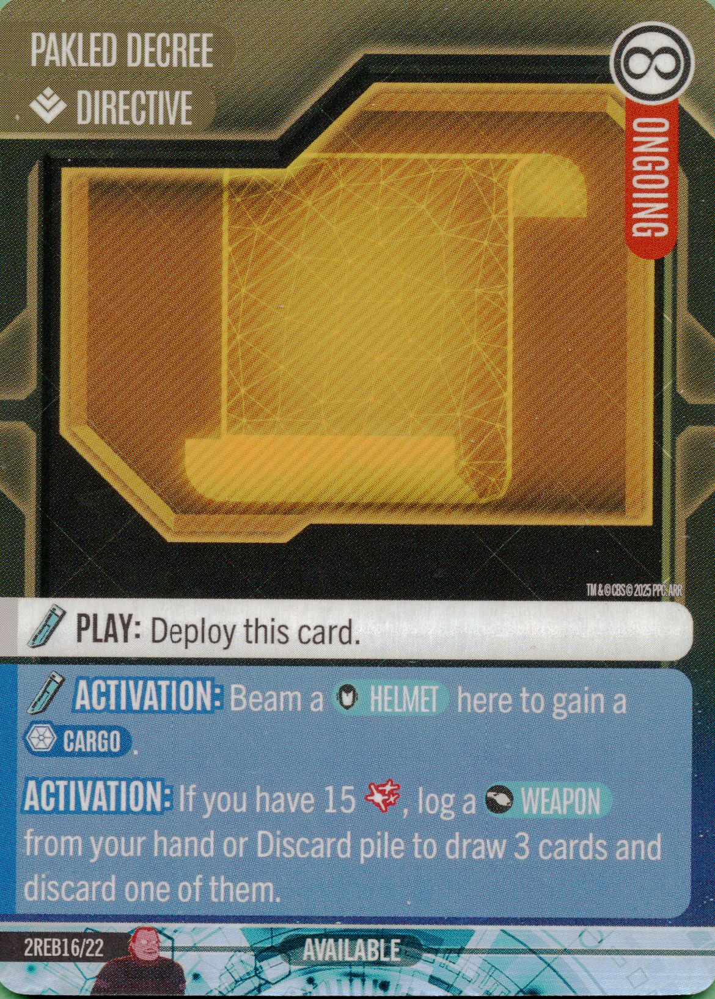
You have Pakled Decree (Directive) deployed which has
- You activate Pakled Decree to beam the WILDCARD as though it had HELMET.
- You may react using Petra Aberdeen's, "REACTION: After putting an ALIEN into play…"
- You may then also react using Augmentation Plague's,"REACTION: After putting a KLINGON into play…".
It does not matter what the WILDCARD was considered when it entered play, each individual operation, including Reaction operations, gives it a chance to be a new trait.
SPECIFIC FREQUENTLY ASKED REACTION QUESTIONS
Captain Pike's U.S.S. Enterprise Promotion and Improbable, Unstoppable, Sensational:
See Example 10 above.
Sela, Sub Commander T'Rul, and Cloaking Device:
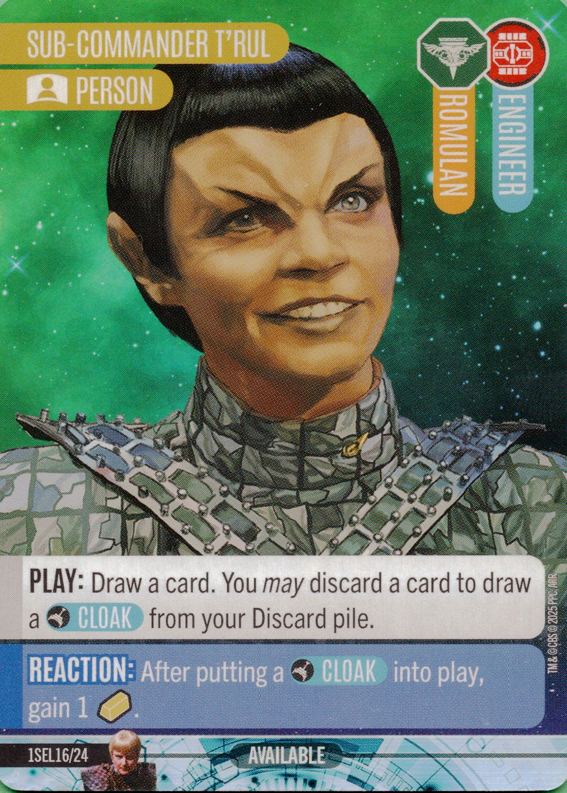
Sub Commander T'Rul (Person)-
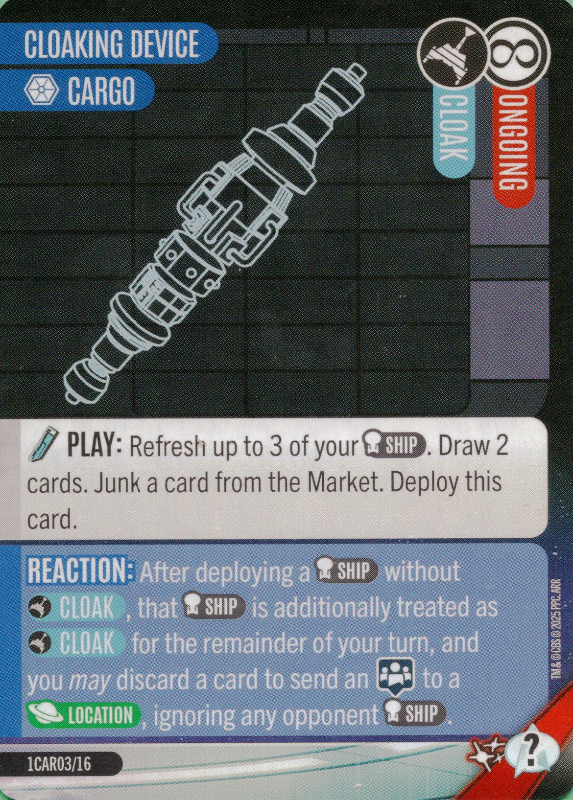
Cloaking Device (Cargo)-
The interaction between these cards works in Sela's favor because Cloaking Device Reacts to a Ship being deployed while Sub Commander T'Rul Reacts "After putting a cloak into play". As discussed above, being put into play is after the entirety of the Play operation is resolved and a Ship being deployed is a portion of the Play operation. Here is the sequence:
- Play a Ship to your staging area.
- As part of the Play operation the Ship deploys-move it to your Fleet Area
- Now that the Ship is deployed, react with Cloaking Device to give it CLOAK
- Now that the Play operation of the Ship is complete, it has been put into play and it has CLOAK
- React with T’Rul to a CLOAK being put into play.
Why does Tevrin Krit (Person) say to “immediately” beam a gained card and what impact does that have on Reactions?
This is legacy language and it has no impact on the above rules about Reactions.
↑ back to top